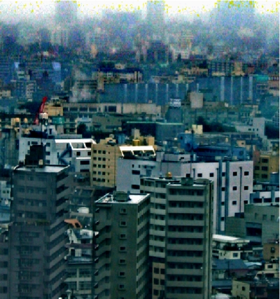
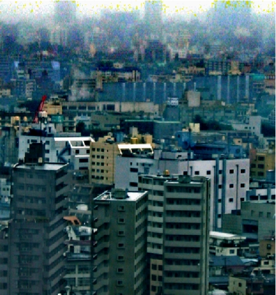

Research Highlights:
All Publications
Bad Weather and Nighttime
Bad Weather and Nighttime
Below are selected papers focusing on bad weather and nighttime. For the complete publication list, see: all publications.


RainFlow: Optical Flow under Rain Streaks and Rain Veiling Effect [PDF]
Li Ruoteng, et al.
International Conference on Computer Vision, ICCV 2019


Heavy Rain Image Restoration: Integrating Physics Model and Conditional Adversarial Learning [PDF]
Li Ruoteng, Cheong Loong Fah, Robby T. Tan
Computer Vision and Pattern Recognition, CVPR 2019


Joint Rain Detection and Removal from a Single Image with Contextualized Deep Networks [PDF]
Wenhan Yang, Robby T. Tan, Jiashi Feng, Jiaying Liu, Zongming Guo, and Shuicheng Yan
IEEE Transactions on Pattern Analysis and Machine Intelligence (TPAMI), 2019


Robust Optical Flow in Rainy Scenes [PDF]
Li Ruoteng, Robby T. Tan, Cheong Loong Fah
European Conference on Computer Vision, ECCV 2018.


Attentive Generative Adversarial Network for Raindrop Removal from a Single Image [PDF | project page]
Rui Qian, Robby T. Tan, Wenhan Yang, Jiajun Su, Jiaying Liu
Computer Vision and Pattern Recognition, CVPR 2018 (Spotlight)


Deep Joint Rain Detection and Removal From A Single Image [PDF ]
Wenhan Yang, Robby T. Tan, Jiashi Feng, Jiaying Liu, Zongming Guo, Shuicheng Yan
Computer Vision and Pattern Recognition, CVPR 2017.


Haze Visibility Enhancement: A Survey and Quantitative Benchmarking [PDF ]
Yu Li, Shaodi You, Michael S. Brown, Robby T. Tan
Computer Vision and Image Understanding, 2017.


Simultaneous Video Defogging and Stereo Reconstruction
Zhuwen Li, Ping Tan, Robby T. Tan, Danping Zhou,
Steven Zhiying Zhou and Cheong Loong Fah
CVPR 2015, Boston, USA.
PDF
Video
Project Page


A Contrast Enhancement Framework with JPEG Artifacts Suppression
Yu Li, Fangfang Guo, Robby T. Tan, Michael Brown
ECCV 2014, Zurich, Switzerland


Adherent Raindrop Detection and Removal
Shaodi You, Robby T. Tan, Rei
Kawakami, and Katsushi Ikeuchi
CVPR 2013 and TPAMI 2015
 
